MakeItTalk
论文信息
- 标题：MakeItTalk: Speaker-Aware Talking-Head Animation
- 作者：Yang Zhou, Xintong Han, Eli Shechtman, Jose Echevarria, Evangelos Kalogerakis, Dingzeyu Li
- 单位：UMass Amherst（GFX Lab）；Adobe Research；Huya Inc
- 发表：ACM Transactions on Graphics 39(6), Article 221（SIGGRAPH Asia 2020 Technical Papers）
- DOI：10.1145/3414685.3417774
- 开源：https://github.com/adobe-research/MakeItTalk（推理完整开源；speaker/VC/i2i 三块训练代码标注 Todo）
先看这篇论文最挑衅的一张图。左边是一段语音波形和一张静态肖像——可以是《戴珍珠耳环的少女》，可以是随手画的素描，可以是 Adobe 的卡通吉祥物 Wilk，也可以是 James Stewart 的黑白剧照。右边，它们全都在说话：嘴唇张合、眉毛挑动、脑袋随着语气左右摆。而这些肖像和这段语音，在模型训练时一个都没见过 #Zhou et al., 2020。
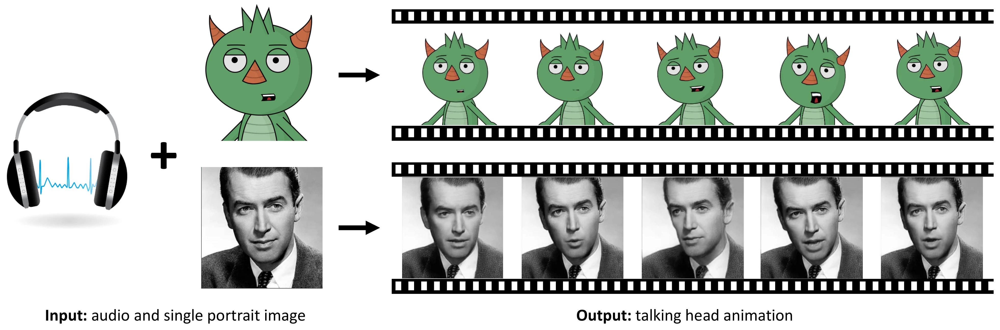
2020 年是语音驱动说话头的"大年"，但当时主流的两条路各有各的死胡同。一条是像素级唇同步：同年的 Wav2Lip 用一个预训练的 lip-sync expert 当判别器，在已有视频上把嘴改得极准 #Prajwal et al., 2020——可它需要一段驱动视频，而且只管嘴，不生成头部运动，更谈不上跨画风。另一条是高保真神经渲染：Thies 等人的 Neural Voice Puppetry 为每个目标人物学一个隐式神经头部模型，帧锐利得惊人，代价是需要该人物约 30 小时的专属视频做 per-subject 训练 #Thies et al., 2020。
还有一类更早的图形学路线：VisemeNet 把音频映射成动画师风格的 viseme 权重曲线去驱动绑定好的 3D rig #Zhou et al., 2018。它输出的是可直接进动画管线的控制参数，但 rig 必须人工绑定、必须重定向，而且只能预测下半张脸。MakeItTalk 的一作 Yang Zhou 与同为 VisemeNet 作者的 Evangelos Kalogerakis（本文第 5 位作者、UMass GFX Lab 主持）正是 VisemeNet 的作者——这篇论文可以读作他们对同一问题的第二次回答：把中间表示从"某个特定 rig 的 viseme 权重"换成"通用 68 点 3D landmark 位移"，把风格来源从"动画师"换成"说话人身份"。
这个组合在当时的能力矩阵里是唯一的空格。论文用一张 Table 1 把 8 个代表方法按 6 个维度对齐：动画格式（类别值：真人图像/绑定模型/3D 网格）、超越唇部的全脸动画、头姿合成、speaker-awareness、处理未见人脸、仅需单张目标图（后四维以 ✓/× 记，最后一维另有"−"表示不适用）#Zhou et al., 2020。MakeItTalk 是唯一一列全部打勾的方法。（笔者读表结论：）"speaker-aware + unseen faces + single image"这三个勾的交集此前无人占据。
这项工作出自 UMass Amherst 图形学实验室（Kalogerakis 主持）与 Adobe Research 的合作，发表于 SIGGRAPH Asia 2020（当年因疫情改为全虚拟会议），载于 ACM TOG 39(6) Article 221，DOI 10.1145/3414685.3417774 #Zhou et al., 2020。资助来自 NSF EAGER-1942069 与 Adobe 赠款，实验在 MassTech Collaborative 资助的 UMass GPU 集群完成；实时三角变形的 GPU 版本由 Jakub Fišer 实现，voice conversion 模块得到 AutoVC 一作 Kaizhi Qian 的直接帮助——这也解释了为什么解耦工具链是原样移植 AutoVC + Resemblyzer 而非重新发明。截至调研时 OpenAlex 记录被引 319 次，官方仓库约 519 stars。
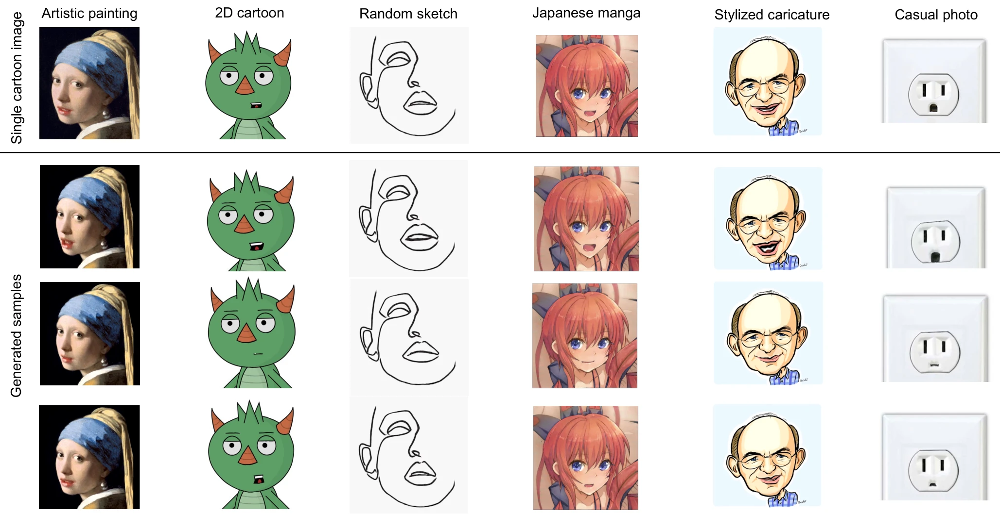
2.1 精确的问题定义
给定两样东西：一段 16 kHz 采样的语音波形 \(x\)，一张单幅肖像图像 \(\mathbf{Q}\)（真人照片、油画、素描、2D 卡通、日本漫画、风格化漫画像皆可）。要求输出一段与语音同步的说话头视频 \(\{\mathbf{F}_t\}\)——不仅口型要对齐（lip-sync），还要还原这个说话人特有的表情细节与头部运动动态 #Zhou et al., 2020。
注意"speaker-aware"这四个字的分量。它不是指"生成一个像某人的脸"，而是指"生成这个人说话时头怎么动、眉毛怎么挑"。这是两个完全不同的问题，也是本文与最相似前作 ADIN 的分水岭：ADIN 在图像域对抗解耦 identity 与 content，但它的 identity "primarily focus on static facial appearance and not the speaker dynamics" #Zhou et al., 2019——它能回答"长得像谁"，回答不了"谁在说话时头会怎么晃"。
2.2 为什么直接回归会失败
音频到面部动画不是一对一映射 #Zhou et al., 2020。同样一句"Ha!"，一个头动保守的说话人可能只是嘴角一挑，一个活跃的说话人会连带整颗脑袋后仰。如果我们直接训练一个 audio→landmark 或 audio→pixel 的回归网络，损失函数会把它推向所有可能输出的条件均值——结果就是一张谁都不像的"平均脸"，动态被抹平，身份被 mode collapse 掉。论文在 Related Work 里对这一类前作的批评毫不客气："the identity is usually bypassed due to mode collapse or averaging during training" #Zhou et al., 2020。
这不是修辞。第 6 部分的消融会给出硬数字：把 voice conversion 解耦拿掉、让原始音频特征直接喂动画网络（"Ours (no separation)"），唇部 landmark 位置误差 D-LL 从 2.0% 恶化到 2.9%（1.5×），landmark 速度差 D-VL 从 0.27% 到 0.64%（2.4×），而张嘴面积差 D-A 从 4.2% 暴涨到 17.1%（4.1×）#Zhou et al., 2020。张口幅度是最能体现"这个人说话有多用力"的量，也是被平均化伤害最深的量。
2.3 中间表示为什么选 landmark
面对 one-to-many，一种思路是把输出空间做大做细（像素级 GAN），另一种是把它做小做准。MakeItTalk 选了后者，而且选得很极端：输出空间是 68 个 3D 面部 landmark \(\mathbf{y}_t \in \mathbb{R}^{68\times 3}\)，也就是 204 维。论文原话："The degrees of freedom (DoFs) for landmarks is in the order of tens (68 in our implementation)" #Zhou et al., 2020。
三个理由，每一个都直接对应一个替代方案的死穴：
| 候选输出空间 | 致命问题 | landmark 相对位移如何绕开 |
|---|---|---|
| 原始像素（百万维） | 必须学习外观，"does not generalize well to faces unseen during training" #Zhou et al., 2020 | 外观由输入图像本身提供，网络只学运动 |
| 3D morphable model 参数 | 3DMM 只定义在真人脸空间，无法表示卡通；且需 per-identity 训练 | 68 点拓扑对任意"类人脸"都能标注，风格无关 |
| rig 控制参数（VisemeNet 路线） | 需人工 rigging / retargeting，每个角色一套 | landmark 是通用几何语言，检测器给出即可用 |
低维还带来两个工程红利：模型紧凑（landmark 两个分支加起来只有 1.9M + 3.8M 参数），中等规模数据就能训；训练成本是单卡 1080Ti 12–30 小时量级 #Zhou et al., 2020。这是"landmark 中间表示比像素生成便宜几个数量级"的直接证据。
2.4 能力矩阵：本文的自我定位（论文 Table 1 逐格转录）
| 维度 | Suwajanakorn 2017 | Taylor 2017 | Karras 2017 | VisemeNet | ADIN | Vougioukas 2019 | Chen 2019 | Thies 2020 | Ours |
|---|---|---|---|---|---|---|---|---|---|
| animation format | image | rigged model | 3d mesh | rigged model | image | image | image | image | image |
| beyond lip animation | ✓ | × | ✓ | × | ✓ | ✓ | ✓ | ✓ | ✓ |
| head pose | ✓ | × | × | × | × | × | × | × | ✓ |
| speaker-awareness | × | × | × | × | × | × | × | ✓ | ✓ |
| handle unseen faces | × | ✓ | × | × | ✓ | × | ✓ | ✓ | ✓ |
| single target image | × | − | − | − | ✓ | ✓ | ✓ | × | ✓ |
八列分别是 #Suwajanakorn et al., 2017、#Zhou et al., 2020 里引作 taylor2017deep 的绑定模型路线、karras2017audio 的 3D 网格路线、VisemeNet #Zhou et al., 2018、ADIN #Zhou et al., 2019、#Vougioukas et al., 2019、ATVGnet #Chen et al., 2019 与 Neural Voice Puppetry #Thies et al., 2020。论文对"handle unseen faces"的定义是：能处理训练时未观察过的人脸（或未观察过的 rig / 3D 网格）；"single target image"指只需一张目标图而不需要一段视频。
3.1 全链路
整个系统由五个模块串成，前四个负责"音频 → landmark 序列"，最后一个按输入图像类型二分。论文 Fig. 2 给出了官方 pipeline 图 #Zhou et al., 2020：
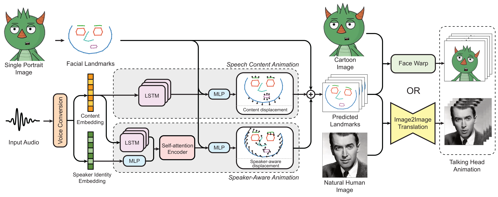
flowchart TD A["音频 x（16 kHz）"] --> B["AutoVC
content embedding A ∈ R^(T×D)（代码中 D = 80 维 mel）"] A --> C["Resemblyzer
speaker embedding s ∈ R^256"] C --> C2["MLP 降维 → 128（×3.0 放大）"] B --> D["① Speech Content Animation
LSTM_c，窗 τ=18 帧（0.3s）
1.9M 参数"] Q["静态 landmark q ∈ R^(68×3)
（检测器从单张图提取）"] --> D D --> E["p_t = q + Δq_t
中性风格 landmark"] B --> F["② Speaker-Aware Animation
LSTM_s（独立参数，τ=18）"] C2 --> G["Attn_s：Transformer 编码器
N=2 层 / 2 头 / d_model=32
窗 τ'=256 帧（4s），3.8M 参数"] F --> G E --> H["MLP_s(h_t, q) → Δp_t"] G --> H Q --> H H --> I["y_t = p_t + Δp_t
最终逐帧 landmark"] I --> J{"输入图像类型？"} J -->|"卡通 / 绘画"| K["③A Delaunay 三角剖分
+ GLSL vertex shader warp
~28 FPS"] J -->|"真人照片"| L["③B 6 通道 UNet
image-to-image translation
30.7M 参数，~22 FPS"] K --> M["说话头视频 + 音轨"] L --> M
这里有一个容易被忽略的设计判断。论文说得很直白：直接从音频+landmark 训一个 baseline 也能work，但"to achieve high-fidelity dynamics, we found that landmarks should instead be predicted from a disentangled content representation and speaker embedding" #Zhou et al., 2020。也就是说，解耦不是锦上添花，是高保真动态的前提。
两个分支的分工有一个非常直觉的说法：无论谁说"Ha!"，嘴唇都得张开——这是 content 决定的、speaker-agnostic 的部分；但张开的精确形状和幅度，以及鼻子、眉毛、脑袋跟着怎么动，取决于谁在说 #Zhou et al., 2020。所以 content 分支负责"说了什么"，speaker 分支负责"谁在说"，两者以加法残差级联：
全文最核心的一个等式
\(\mathbf{q}\in\mathbb{R}^{68\times3}\) 是从任意输入图像上检测到的静态 landmark（训练视频用 Bulat 的 3D 检测器 #Bulat et al., 2017，卡通图用 Face-of-Art #Yaniv et al., 2019），网络从不预测绝对位置，只预测相对 \(\mathbf{q}\) 的位移。
3.2 模块 0：AutoVC 式 content/speaker 解耦
MakeItTalk 的概念贡献用论文自己的一句话概括最准："We introduce the idea of voice conversion to audio-driven animation" #Zhou et al., 2020。语音转换社区早就解决了"怎么把一段话的音色换掉而内容不变"，本文把这套工具链原样搬进动画 pipeline。
AutoVC 的机制是一个刻意的信息瓶颈 #Qian et al., 2019：LSTM 编码器把 mel 谱压进一个容量小于"说话人信息所需容量"的 bottleneck，训练目标只有自重构——同一说话人的 utterance A 过 content encoder，另一段 utterance B 提供 speaker embedding，decoder 重构 A 的谱。因为瓶颈装不下音色，encoder 被迫丢弃它，只留下 phonetic/prosodic content。
代码里的具体形状（论文未给）：Generator 实例化为 dim_neck=16, dim_emb=256, dim_pre=512, freq=16。Encoder 是 3 层 Conv1d（kernel 5、512 通道、GroupNorm 32 组）+ 2 层双向 LSTM（每向 16 维），每 freq=16 帧才输出一次 bottleneck code——取前向 LSTM 该段最后一帧与后向 LSTM 该段第一帧拼成 32 维。mel 帧率是 62.5 fps（hop_length=256 @ 16 kHz），除以 16 得到约 3.9 Hz 的内容更新率，正好是音素时长的量级。f0 以 257 维 one-hot（256 bins + unvoiced）送入 decoder。
论文没写的实现真相
推理时 content embedding 不是"从 AutoVC encoder 直接读出来的向量"，而是把任意测试音频 voice-convert 到一个硬编码的目标音色之后重建的 80 维 mel 谱。那个目标 speaker embedding 存在仓库的 src/autovc/retrain_version/obama_emb.txt 里——解耦的工程实现是"通过重建到 Obama 音色来洗掉源音色"。这也直接解释了论文 Limitations 的第一条：/b/ /m/ /p/ /f/ /v/ 这些双唇音与擦音的口型经常丢失，因为谱重建会吞掉这些几十毫秒的短音素表征。
speaker 侧用 Resemblyzer（GE2E 说话人验证模型的开源实现）提取 256 维 speaker embedding #Wan et al., 2018。论文报告了一个经验发现：把 256 维经 MLP 降到 128 维提升了对未见说话人的泛化 #Zhou et al., 2020。代码里这个 MLP 实际是 3 层（256→256→128→spk_emb_enc_size），与论文"single-layer MLP"的表述有出入。
3.3 模块 1：Speech Content Animation
content 分支的任务是把 \(\mathbf{A}\) 映射到中性风格的 landmark 位置。论文在这里给了一个值得单独强调的实验结论：循环网络显著优于前馈网络，因为语音 content 与 landmark 之间存在跨帧依赖——音素持续数十毫秒，协同发音（coarticulation）让当前口型取决于前后音素；而 vanilla RNN 又不如 LSTM #Zhou et al., 2020。（论文只给了定性结论，未附前馈网络的具体数字。）
content 分支：从音频窗口到中性 landmark（论文 Eq. (1)–(3)）
\(\tau = 18\) 帧 = 0.3 s @ 62.5 fps。LSTM 为 3 层 × 隐层 256（单向、取窗口末帧输出：这两点来自代码，论文只说"three layers of units, each having an internal hidden state vector of size 256"）；解码 MLP 为 3 层，隐层 512 → 256 → 204（204 = 68×3）。注意 MLP 的输入拼接了静态 landmark \(\mathbf{q}\)——位移预测显式条件于目标脸的形状。模块总参数 1.9M。
3.4 模块 2：Speaker-Aware Animation
为什么 content 分支的 0.3 s 窗口不够？因为时间尺度差了几个数量级：音素持续几十毫秒，而一次左右摆头可以持续 1 到数秒 #Zhou et al., 2020。所以 speaker 分支换成自注意力，在 256 帧（4 秒）窗口上算全对（all-pairs）帧间兼容性权重 #Vaswani et al., 2017 #Devlin et al., 2018。
speaker 分支：在 content 位移上做残差调制（论文 Eq. (4)–(7)）
\(LSTM_s\) 与 \(LSTM_c\) 同架构、同窗长（\(\tau = 18\)）但参数独立——论文的原话是"different learned parameters … such that the resulting representation \(\tilde{\mathbf{c}}_t\) is more tailored for capturing head motion and facial expression dynamics"。注意力窗 \(\tau' = 256\) 帧 = 4 s，输出取最后一层自注意力的结果与静态 landmark 拼接后过 MLP。编码器遵循 Vaswani 的 encoder block：\(N=2\) 层，每层多头自注意力 \(N_{head}=2\)、\(d_{model}=32\)，加正弦位置编码；附录还补了一句，同样沿用 Vaswani 的 embedding layer（一层 MLP，hidden size 32）。总参数 3.8M。
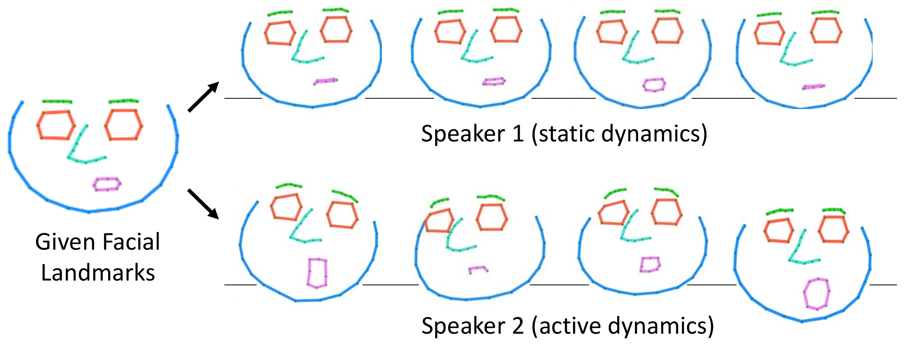
这张图是全文最有说服力的一张定性证据：它证明模型学到的不是"音频→运动"，而是"（音频，身份）→运动"。第 6 部分会看到它的定量版本——把 speaker embedding 换成随机的，头旋转误差立刻恶化 3.6×。
代码里的三处演化痕迹
d_model = transformer_d_model × heads = 32×2 = 64（每头 d_k = 32），与论文"dimensionality 32"按每头维度理解才一致；d_ff 硬编码为 2048，而论文附录说"与输入同维"；forward 里 speaker embedding 一律先乘 emb_coef=3.0 放大，训练与推理都走这一步；训练时还额外叠加 randn × 0.01 的高斯噪声做正则。这些论文正文一律未提。3.5 核心洞察：相对位移 + 配准 = 跨域泛化
这是全文最值得反复读的一段。论文自己的归因是："Despite being only trained on human facial landmarks, our method can successfully generalize to a large variety of stylized cartoon faces. This is because our method uses landmarks as intermediate representations, and also learns relative landmark displacements instead of absolute positions." #Zhou et al., 2020
展开成三层逻辑链：
第一层：身份几何被完全排除在学习问题之外。绝对位置可以分解为 \(\mathbf{y}_t = \mathbf{q} + \Delta_t\)，其中 \(\mathbf{q}\) 编码"这张脸长什么样"（比例、位置、风格），\(\Delta_t\) 编码"脸在怎么动"。网络只学后者。训练时每个样本的 \(\Delta_t\) 都是从它自己的 \(\mathbf{q}\) 出发的增量，所以学到的 audio→motion 映射是 identity-free 的。测试时换一个 \(\mathbf{q}\)——卡通脸、油画脸、雕像脸——只要 landmark 检测器能给出拓扑一致的 68 点，同一套 \(\Delta_t\) 直接可用。卡通脸的"身份"从未需要被学习。
第二层：位移幅度处在跨域共享的规范化空间里。光有相对位移还不够，还得保证"下唇下移 0.05"在真人脸上和在漫画脸上是同一个语义量。做法是配准。论文的说法是：把 landmark 配准到一个正脸标准面部模板 #Beeler et al., 2014，用的是"best-estimated affine transformation" #Segal et al., 2009；代码里的实际实现是 util/icp.py 的经典点到点 ICP（最近邻匹配 + 最小二乘刚体变换），并且对应关系是写死的 9 个锚点——索引 (27, 28, 29, 30, 33, 36, 39, 42, 45)，即鼻梁 4 点 + 鼻头 + 四个眼角，对齐目标取自 STD_FACE_LANDMARKS.txt。卡通木偶绑定时走的是另一套显式归一化（gen_puppet_utils.py）：scale = 1.6/(x_0 - x_16) 把下颌宽归一到 1.6、shift 取 landmark 0/16 的中点、z 轴直接替换为标准脸的 z、最后 xy 同时取负。于是所有域的位移都表达在同一个标准脸坐标系里。（一个小的不对称：推理侧的 norm_input_face 把标准脸 z 再乘 0.1，绑定侧则原样照抄。）配准还顺手把 speaker-dependent 的头姿从 content 分支的监督信号中因式分解掉，保证 content 分支的"中性"。
第三层：解耦让每个分支的学习目标都变窄、变良定。content 分支只需学"说话→嘴动"这一 speaker 无关的窄映射——窄到一个说话人的 6 小时数据就够（论文原话："one registered speaker is enough"）#Zhou et al., 2020。speaker 分支只需学"identity→头动/表情分布"的调制。若不解耦，同一音频对应多说话人的不同 landmark，映射本质一对多，网络无法消歧，只能吐均值。论文对此给的是一个假设而非结论，原话是："We hypothesize this is because the content and the speaker identity information are still entangled and therefore it is hard for the network to disambiguate a one-to-one mapping between audio and landmarks." #Zhou et al., 2020——no-separation 消融里 D-A 恶化 4.1× 与这个假设一致，但作者并没有进一步做因果验证。
3.6 渲染分支 A：卡通 = Delaunay 三角剖分 + GPU shader warp
卡通图（矢量画、平涂）有锐利的特征边缘，像素级生成会把它糊掉。所以这一支完全没有学习成分，是纯几何 morphing。论文在 Related Work 的 "Warpping-based character animation" 一段里点出两个前身：Fišer 等人的 "Example-Based Synthesis of Stylized Facial Animations" #Fišer et al., 2017 与 Averbuch-Elor 等人的 "Bringing Portraits to Life" #Averbuch-Elor et al., 2017，两者都是"用视频提取的人脸 landmark 驱动肖像动画"；本文明确说自己的 Delaunay warping "inspired by" 后者 #Zhou et al., 2020。区别在于驱动信号——前人用视频，本文用音频。有个巧合值得一提：Jakub Fišer 正是本文致谢里"实现实时三角变形 GPU 版本"的那个人，前作作者亲自把 warp 做成了实时。
机制可以用图形学的语言一句话讲完：把初始像素作为纹理（texture map）绑定到三角剖分产生的三角形上——绑定只在最开始做一次；动画过程中只移动顶点（landmark 位置），只要拓扑不变，每个三角形上的纹理自然跨帧传递。论文的原话类比是 vertex/fragment shader 管线："textures are bind to each fragment at the very beginning and from then on, only the vertex shader is changing the location of these vertices" #Zhou et al., 2020。实现是 GLSL C++，实时运行。
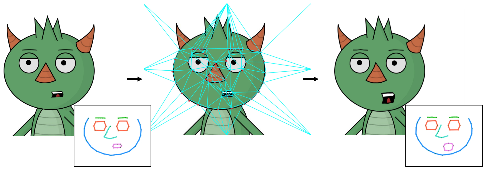
代码层面还有一个巧妙的工程细节：预测出的 68 点会与一组远距离边界锚点拼接后再做三角剖分。通用路径（get_puppet_info 的 else 分支）沿图像矩形每条边取 4 个点、共 12 个，并把它们向外推到 B = 5000 像素之外；证据是 main_end2end_cartoon.py 把拼接结果 reshape 成 (-1, 160)，而 160 = 68×2 + 12×2。仓库自带的部分木偶（wilk_old、sketch、onepunch、cat、paint 等）则各自硬编码了一个 8 点的 bound 数组。这些锚点把背景三角格钉死在画面之外，于是只有脸部三角形真正变形，背景保持静止。对于只标注了内唇的木偶，还有 --inner_lip 模式，取 range(0,48) + range(60,68) 共 56 点。
3.7 渲染分支 B：真人 = 6 通道 UNet image-to-image translation
真人照片需要幻觉出纹理、阴影、被遮挡的区域，纯 warp 不够。这一支的灵感来自 Zakharov 等人的 few-shot talking head #Zakharov et al., 2019，但做了一个关键替换：不用其单独 embedder + AdaIN 编码目标外观的方案，改用 UNet 直接把肖像当空间输入拼接。理由是 UNet 无需对未见人脸 fine-tune——论文原话："Unlike zakharov2019few, our model handles generalization to faces unseen during training without the need of fine-tuning" #Zhou et al., 2020。
输入构造分两步：把预测 landmark \(\mathbf{y}_t\) 连接相邻点渲染成预定义颜色的线段图 \(\mathbf{Y}_t\)（3 通道），再与输入肖像 \(\mathbf{Q}\) 逐通道拼接成 6 通道 256×256 图像 \([\mathbf{Y}_t;\mathbf{Q}]\)。
生成器是 ResUnetGenerator(input_nc=6, output_nc=3, num_downs=6)，论文明说其架构 follow 两个生成器：Esser 等人的 variational U-Net（VUNet） #Esser et al., 2018 与 Han 等人的 FI-NET（一个时装图像 inpainting 网络）#Han et al., 2019，跳连则来自 U-Net #Ronneberger et al., 2015。逐层通道数（论文附录 Table 完整给出，与代码逐项吻合）：
| 分辨率 | Encoder 操作 | 分辨率 | Decoder 操作 |
|---|---|---|---|
| 256×256 | 输入 6ch（线图 3 + 肖像 3） | 4×4 | bottleneck 512 |
| 128×128 | ResBlock down (3+3)→64 | 8×8 | ResBlock up 512→512 |
| 64×64 | ResBlock down 64→128 | 16×16 | Skip + up (512+512)→512 |
| 32×32 | ResBlock down 128→256 | 32×32 | Skip + up (512+512)→256 |
| 16×16 | ResBlock down 256→512 | 64×64 | Skip + up (256+256)→128 |
| 8×8 | ResBlock down 512→512 | 128×128 | Skip + up (128+128)→64 |
| 4×4 | ResBlock down 512→512 | 256×256 | Skip + up (64+64)→3 + Tanh |
每个下采样块 = 一个 stride-2 的 3×3 卷积 + 2 个 residual block；上采样块 = 最近邻 2× 上采样 + 3×3 卷积 + 2 个 residual block。参数量 30.7M。
笔者注：ResUnetGenerator 这个类名、input_nc/output_nc/num_downs 这套参数命名，以及整节被叫作 "image-to-image translation"，都是 pix2pix 的约定；仓库里的 model_image_translation.py 也确实是从 FI-NET / CP-VTON 那一脉虚拟试衣代码改过来的（见 3.8）。但论文全文没有引用 pix2pix，它只引了 Esser 与 Han。所以这条血统是从代码读出来的，不是论文的归属声明。
还有一个容易被忽略的结果：这个像素分支自己就是跨域的。论文写的是 "Even only trained on natural face images, our image translation module can also generate plausible facial animations not only limited to real faces, but also to 2D paintings, picture of statue heads, or rendered images of 3D models" #Zhou et al., 2020。也就是说，跨域能力并不只来自卡通那条 Delaunay warp 分支——真人 UNet 只在自然脸上训练，却能直接吃 2D 绘画、雕像头像照片和 3D 渲染图。原因还是同一个：网络的外观信息全部来自拼接进去的输入肖像本身，它学的只是"给定线框图该往哪儿补纹理"，而线框图是风格无关的。这条结果只出现在正文一段话里、证据放在补充视频，所以很少被后来的工作引用。
一个值得警惕的设计取舍：这个网络没有任何时序模块
逐帧独立生成，时序一致性完全靠"landmark 随时间平滑变化 → 输出图像作为 landmark 的插值自然连贯"这一条假设 #Zhou et al., 2020。它把时序平滑的责任前移给了 landmark 序列（再加推理期的 savgol 平滑兜底）。好处是网络简单、可并行；代价是一旦 landmark 抖，像素就抖，而且没有跨帧信息可以纠错。已知的直接后果：网络生成整幅图像、不区分前景背景，头动时背景会跟着一起扭曲，产生"相机运动混入头动"的观感——论文自己在 results 一节也承认了这一点。
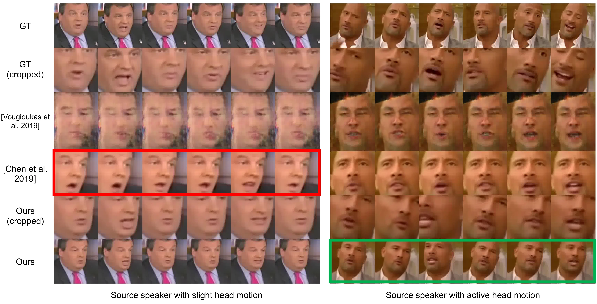
3.8 代码分析：仓库血统与开源边界
官方仓库 adobe-research/MakeItTalk 是 PyTorch 实现，git 历史被 squash 成单个 commit（b7e8dac，2021-12-01 "change filenames"），无法考古开发过程。但代码本身透露了不少论文里读不到的信息：
- 图像翻译网络脱胎于虚拟试衣。
src/models/model_image_translation.py里完整保留了 FI-NET / CP-VTON 系的GMM、FeatureCorrelation、TpsGridGen、AffineGridGen、UnetGenerator等类——论文说架构 follow Esser 与 Han 等人，代码证据显示它是从虚拟试衣网络改过来的。 - 训练数据管线内嵌了另一套 landmark 检测器。i2i 微调用的是 Adaptive Wing Loss 版 FAN 模型（
WFLW_4HG.pth，4 个 hourglass，98 landmark）做在线对齐，而不是正文用的 68 点。 - 微调数据指向 First Order Motion Model 的预处理裁剪。
data_preparation_with_preprocessing.py里写的是vox_p3/train→ "PreprocessedVox"，即 Siarohin 等人发布的高分辨率 VoxCeleb2 裁剪 #Siarohin et al., 2019，对应论文"fine-tune on high-resolution video crops"那一句。 - 卡通 warp 是闭源二进制。
facewarp/facewarp.exe是 PE32+ Windows x86-64 控制台程序，仓库里没有 GLSL 源码，只有调用壳。Linux 下自动走wine（官方测试环境 Ubuntu 16.04 + wine 5.0.3）。 - 推理可复现，训练基本不可复现。README 的 "Training code for each module" 复选框未勾，Voice Conversion / Speaker-Aware / Image-to-Image 三节全是 "Todo..."，只有 content 分支给了完整训练说明与预处理数据下载。而 5 个预训练模型（VC / content / speaker / i2i /
facewarp.exe）全部放出。
"Todo" 是写了但没清理到能跑，不是没写
main_train_speaker_aware.py 的 import 缺 src. 前缀，仓库根目录下直接 ImportError；train_speaker_aware.py 以 pos_dim=…, use_prior_net=True 实例化模型，而当前模型类签名根本没有这两个参数（TypeError）；同一文件解包 4 个返回值，而 forward 只返回 3 个（必崩）。speaker 训练脚本对应的是被替换掉的旧模型版本，从未随重构更新。论文 Eq. (10)–(12) 描述的 LSGAN 判别器训练，在发布代码里整段被注释掉，实际只剩 L1(reg_fls) + λ·Laplacian + pos L1。
4.1 分模块独立训练
没有端到端联合训练——四个模块各训各的，数据集也各不相同。这个选择本身就说明了 landmark 中间表示的价值：模块间的接口是低维、可解释、可离线预计算的，所以可以拆开训。
| 模块 | 数据集 | 规模 | 关键处理 |
|---|---|---|---|
| Voice Conversion | VCTK | 109 名英语母语说话人（多口音） | AutoVC 自重构；speaker embedding 由 Resemblyzer 预训练初始化；代码 ckpt 名 360000-G.ckpt 即 36 万 iteration |
| Content 分支 | Obama Weekly Address #Suwajanakorn et al., 2017 | 6 小时单一说话人演讲视频 | Bulat 3D 检测器提 landmark → generalized ICP 配准到正脸标准模板（因式分解掉头姿）；单一说话人足够 |
| Speaker-aware 分支 | VoxCeleb2 子集 | 67 说话人 / 1232 clips / 人均 5–10 分钟；60% / 20% / 20% 划分 | 在 speaker 表示空间用 Poisson disk sampling 选点保证多样性；landmark 检测质量人工核验；不做配准（要保留头动） |
| Image Translation | VoxCeleb2 成对帧 → FOMM 高分辨率裁剪子集微调 | 原文未明确给出 | 同一视频随机采 source/target 帧对；target landmark 栅格化成 RGB 线图 |
两个容易看漏的细节。其一，帧率对齐是在 landmark 上做的，不是在像素上：原视频按原帧率抽 landmark，再统一插值到 62.5 fps，音频 16 kHz、mel 谱 62.5 Hz（跟随 AutoVC 的设计）。作者说试过其他常见帧率，这一套在全管线上表现最好 #Zhou et al., 2020。其二，content 分支配准而 speaker 分支不配准——这一个开关的差别，正是"content 中性 / speaker 带头姿"分工的实现方式。
4.2 损失函数
content 分支的损失是位置项加一个图 Laplacian 项：
content 分支损失 \(L_c\)（论文 Eq. (8)）
第一项是预测 landmark 与配准后参考 landmark 的位置距离；第二项是 graph Laplacian 坐标距离，\(\lambda_c = 1\)（hold-out validation 选定），\(N = 68\)。
Laplacian 坐标的定义是每个 landmark 减去其同一面部部件内邻居的均值：
论文在这里只说了一句 "We use 8 facial parts that contain subsets of landmarks predefined for the facial template"，没有列出索引 #Zhou et al., 2020。不过这 8 个部件是可以从发布代码里精确还原的：train_content.py 用两张显式的"两邻居表" n1 / n2 把每个 landmark 和它在同一环上的前后邻居配对，这些环正好是 dlib 68 点惯例的 8 组——下颌 0-16、左眉 17-21、右眉 22-26、鼻 27-35、左眼 36-41、右眼 42-47、外唇 48-59、内唇 60-67。
顺带两处代码与论文的出入就藏在这几行里：其一，代码取的是环上前后两个邻居的均值（V - 0.5*(V[n1] + V[n2])），而论文 Eq. (9) 写的是通用邻域 \(\mathcal{N}(\mathbf{p}_i)\) 上的均值；其二，这里用的是 l1_loss，而论文 Eq. (8)(9) 写的是平方 L2 范数。
直觉上，Laplacian 坐标是差分坐标，约束的是局部网格形状而非绝对位置——即使整体位移有偏差，也能防止五官局部结构塌陷或抖动。这是从 mesh processing 借来的经典正则化 #Sorkine, 2006。
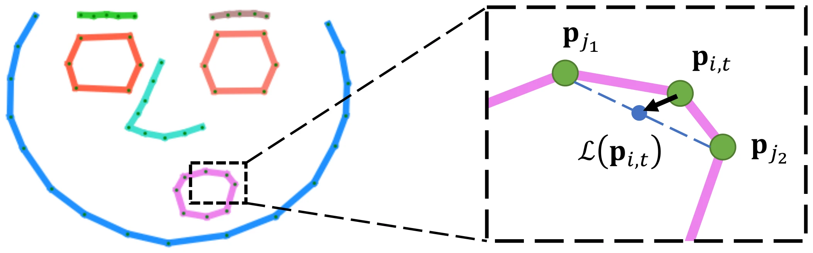
speaker 分支在此之上加了 LSGAN 对抗项 #Mao et al., 2017。判别器 \(Attn_d\) 与生成器自注意力结构相似（额外接一个 3 层 MLP，hidden 512→256→1），输入同窗口的 landmark 序列 + audio content + speaker embedding，逐帧输出"真实度" \(r_t\)：
LSGAN 与 speaker 分支损失（论文 Eq. (10)–(12)）
\(\lambda_s = 1\)，\(\boldsymbol{\mu_s = 0.001}\)，均经 hold-out validation 选定。生成器与判别器交替训练。帽子约定容易看反：带帽的 \(\hat{r_t}\) / \(\hat{\mathbf{y}}_t\) 是训练集里的真值，不带帽的 \(r_t\) / \(\mathbf{y}_t\) 是网络生成量。所以 \(L_{gan}\) 把 \(\hat{r_t}\) 推向 1、\(r_t\) 推向 0（判别器任务），而 \(L_s\) 里的 \(\mu_s\sum(r_t-1)^2\) 反过来把生成量 \(r_t\) 推向 1（生成器任务）。注意 GAN 权重只有 0.001——它是轻度正则，主导项仍是位置 + Laplacian。动机是：纯回归损失只会得到平滑的均值动态，GAN 迫使生成序列在时序上"看起来真实"。
图像翻译分支用 L1 像素损失加 VGG19 感知特征距离 #Johnson et al., 2016，src/trg 两个方向都算：
其中 \(\phi\) 是预训练 VGG19 #Simonyan et al., 2014 五个 slice（relu1_1 … relu5_1）特征图激活的拼接。这条式子在论文的 LaTeX 里带 \nonumber，是全文唯一没有编号的显示公式（有编号的是 Eq. (1)–(12)）。代码里还多了一项论文未提的 Gram 矩阵 style loss：StyleLoss.forward 直接返回 F.mse_loss(Gx, Gy) * 30000000；而三项的合并是 loss = loss_l1 + loss_vgg + loss_style——一个没有任何权重系数的裸加和，之所以和论文的 \(\lambda_a = 1\) 对得上，纯粹是因为代码根本没乘系数。
4.3 代码里那些"论文没写"的训练 trick
- 参考脸 = 全片"最闭嘴"帧。每个训练 clip 每隔 10 帧采样，取内唇多边形（landmark 60-67）面积最小的那一帧作为 face_id 基准。网络学的是相对这个闭嘴态的位移——这是能泛化到卡通的关键之一。
- 嘴唇区域自适应加权。权重 \(w = 1/(|y_{66}-y_{62}|\times 4 + 0.1)\)，即嘴越闭合权重越大（上限 10），加权到 landmark 48-67 的 L1 损失上。目的是强化闭口精度——闭嘴闭不拢是说话头最扎眼的失败模式。
- 音频特征标准化。减均值除标准差，统计量预存在
MEAN_STD_AUTOVC_RETRAIN_MEL_AU.txt（160 行 = 80 mean + 80 std）。 - 所有输入 wav 先归一化到 −20 dBFS（pydub），并用 ffmpeg 强制重采样到 16 kHz。长音频按 4096 帧一段切分过 VC，pad 到 32 的倍数再拼接。
4.4 训练配置披露表
| 配置项 | 披露状态 | 具体值 |
|---|---|---|
| 训练数据 | ✅ 已披露 | VCTK 109 人（VC）；Obama Weekly Address 6h（content）；VoxCeleb2 67 人 / 1232 clips，60/20/20 划分（speaker）；VoxCeleb2 + FOMM 高分辨率裁剪（i2i） |
| 训练硬件 | ✅ 已披露 | UMass GPU 集群。content：1× Nvidia 1080Ti；speaker：1× 1080Ti；i2i：8× 1080Ti |
| 优化器 | ✅ 已披露 | Adam（PyTorch），weight decay \(10^{-6}\)；\(\beta\) 原文未明确给出（PyTorch 默认 0.9/0.999）；i2i 代码为 betas=(0.5, 0.999) |
| 学习率 | ✅ 已披露 | content / speaker / i2i 均为 \(10^{-4}\)。代码差异：speaker 脚本默认 1e-3 且有阶梯衰减 lr × 0.3^(epoch//50)、下限 1e-5；无 warmup |
| Batch size | 部分披露 | i2i = 16（论文）/ 8×DataParallel（代码默认）；content = 1 clip × 128 个 18 帧窗口；speaker = 1 clip × 512 窗口；推理段批 seg_bs=512 硬编码 |
| 训练步数 / 轮数 | ⚠️ 论文未披露 | 代码默认 content / speaker nepoch=1001，i2i nepoch=150（发布 ckpt 名 ckpt_116_i2i_comb.pth 与之呼应）；VC 360,000 iterations |
| 训练时长 | ✅ 已披露 | content 12 小时（1× 1080Ti）；speaker 30 小时（1× 同一块 GPU）；i2i 20 小时（8× 1080Ti）；VC 未披露。论文没有给合计值——按上述披露推算约 202 GPU·小时（12×1 + 30×1 + 20×8，笔者计算） |
| 模型结构与参数量 | ✅ 已披露 | content LSTM 3×256 + MLP 512/256/204 = 1.9M；speaker Transformer \(N=2\) / 2 头 / \(d_{model}=32\) + LSTM = 3.8M；i2i ResUNet 6 级下采样 = 30.7M；AutoVC 与 Resemblyzer 参数量未披露 |
| 精度格式 | ⚠️ 原文未明确给出 | 代码全程 FP32，无 AMP / 混合精度痕迹；PyTorch 1.x + Python 3.6 |
| Checkpoint 策略 | 部分披露 | content 每 epoch 存；speaker 每 25 epoch 存；i2i 每 epoch 存 + 每 1000 step 存 last。选择标准原文未明确给出（\(\lambda\) 权重只说 "set through hold-out validation"） |
复现警示：代码默认 \(\neq\) 论文
speaker 分支训练脚本默认 use_11spk_only=True，只用 11 个硬编码的 VoxCeleb2 说话人 ID（48uYS3bHIA8、E0zgrhQ0QDw、E_kmpT-EfOg、J-NPsvtQ8lE、Z7WRt--g-h4、_ldiVrXgZKc、irx71tYyI-Q、sxCbrYjBsGA、wAAMEC1OsRc、W6uRNCJmdtI、bXpavyiCu10）——与论文的 67 speakers 不一致。此外训练脚本硬编码了作者集群的绝对路径（/mnt/ntfs/Dataset/TalkingToon/…、E:\Dataset\VCTK\…）。
5.1 端到端流程
真人分支的入口是 main_end2end.py，卡通分支是 main_end2end_cartoon.py。两者共享前半段（音频解耦 → 双分支 landmark 预测），在后半段分叉。完整链路：
- landmark 检测：真人用
face_alignment库（Bulat 3D 检测器，flip_input=True）从输入照片检测 68×3 landmark；卡通用 Face-of-Art #Yaniv et al., 2019 加人工精修（见 5.4）。 - 音频前处理：ffmpeg 强制重采样到 16 kHz，pydub 归一化到 −20 dBFS；Resemblyzer 按 60 秒段切分提取 speaker embedding（每段
embed_utterance(rate=2)取 partials 平均，再跨段平均）。 - Voice conversion：按 4096 帧分段过 AutoVC，重建到 Obama 音色，得到 80 维 mel content embedding @ 62.5 fps。
- 双分支预测：content 分支输出中性位移，speaker 分支输出残差调制，相加得 \(\mathbf{y}_t\)。
- 后处理链：14 步（见 5.2）。
- 渲染：真人走 UNet（62.5 fps VideoWriter，输出 256×3 宽画布 = 参考帧 | 生成帧 | landmark 图），卡通走
facewarp.exe逐帧输出 TGA 再ffmpeg -r 62.5合成 mp4。 - 合音轨：ffmpeg 把原始音频拼回视频。
5.2 十四步后处理链
这是本篇最值得工程读者抄走的一节。论文正文一个字都没提，但它决定了实际观感。以下是 main_end2end.py + src/approaches/train_audio2landmark.py 的真实执行顺序：
| # | 步骤 | 参数与做法 | 解决什么问题 |
|---|---|---|---|
| 1 | 检测输入脸 landmark | Bulat 3D，flip_input=True | 得到 \(\mathbf{q}\) |
| 2 | 手工微调输入脸 | "slimmer lips and wider eyes"：landmark 49-53 的 y +1、55-59 的 y −1（收薄嘴唇）；37,38,43,44 的 y −2、40,41,46,47 的 y +2（放大眼睛） | 纯审美调整，让生成结果更"上镜" |
| 3 | 可选强制闭嘴 | close_input_face_mouth(p1=0.7, p2=0.5)：输入照片张嘴时按内外唇均值混合 | 输入姿态与网络基准（闭嘴态）不匹配 |
| 4 | 归一化 | scale = 1.6/(x_0 - x_16)，shift 取 landmark 0/16 中点，\(z\) 用标准脸 \(z \times 0.1\)，\(xy\) 同时取负 | 映射到跨域共享的标准脸坐标系 |
| 5 | speaker 分支平滑 | savgol_filter（窗 31，3 阶） | 压掉头动高频抖动 |
| 6 | 强制闭合 speaker 分支的嘴 | close_mouth_ratio=0.99：外唇 49-54 与 55-59、内唇 61-64 与 65-67 各自向上下唇均值混合 99% | 嘴部动画几乎完全交给 content 分支，pose 分支只管头动和表情——避免两个分支打架 |
| 7 | 头动幅度缩放 | × amp_pos（默认 0.5） | 网络预测的头动偏大，需要收敛 |
| 8 | 逐维 calibration | content 分支对每个 18 帧窗预测嘴部基线，然后减去每维最小 50% 帧的均值 | 把"最小位移"对齐到零，防止嘴合不拢 |
| 9 | 唇部幅度缩放 | × amp_lip_x / amp_lip_y（默认 2 / 2），只作用于 landmark \(\geq 48\) 的 \(x/y\) | 网络预测的唇动偏保守 |
| 10 | 防翻唇 | __solve_inverse_lip2__：若内唇多边形有符号面积 \(< 0\)（嘴唇内外翻转），按固定规则交换/平均 landmark 61-67 与 63-65，并用前一帧传播修正外唇 \(y\) | 纯几何后处理修复网络输出的拓扑错误 |
| 11 | 鼻尖点修复 | landmark \(27 = 2\times 28 - 29\) 外推 | 检测器/网络在鼻根处不稳定 |
| 12 | 全局平滑 | savgol_filter(5, 3) | 逐帧残余抖动 |
| 13 | 程序化眨眼 | add_naive_eye：先以 \(r=0.95\) 混合上下眼睑收窄眼睛，再从 \(t=30\) 帧起每次 t += 60 + randint(30,90) 触发一次（62.5 fps 下间隔 90–149 帧，约 1.4–2.4 秒一次），眨眼帧眼睑按 0.25/0.75 混合闭合，前后 \(K_1=10\) / \(K_2=15\) 帧线性插值过渡 | 音频模型完全不预测眨眼，但人眼对"不眨眼"极度敏感 |
| 14 | 输出平滑 | 脸部（前 48 点）savgol(15,3)，嘴部 savgol(5,3)。卡通分支窗口不同：17/3 与 11/3 | 嘴部需要保留更多高频，脸部可以更平滑 |
randint 硬编码加上去的。这提醒我们：论文里的"方法"和能跑的"产品"之间，往往隔着一整层没有写进 paper 的后处理。5.3 可调参数
命令行暴露三个：--amp_lip_x（唇部 x 位移放大）、--amp_lip_y（唇部 y）、--amp_pos（头动位移），真人与卡通默认均为 2 / 2 / 0.5。Colab demo 把它们做成了滑块 GUI：AMP_LIP_SHAPE_X/Y ∈ [0.5, 5.0] step 0.1、AMP_HEAD_POSE_MOTION ∈ [0, 1] step 0.05（TDLR 版默认 0.35，注释写着 "usually smaller than 1.0, put it to 0. for a static head pose"），另有 ADD_NAIVE_EYE / CLOSE_INPUT_FACE_MOUTH 开关，以及论文未提的 UPPER_LIP_ADJUST / LOWER_LIP_ADJUST（唇厚，\(\in [-3,3]\)）与 LIP_WIDTH_ADJUST（唇宽缩放，\(\in [0.8,1.2]\)）。卡通分支的 ADD_NAIVE_EYE 默认为 False——卡通不程序化眨眼。
5.4 新卡通角色的绑定流程（半自动，一次性）
这是很多人误以为"全自动"的环节。真人照片确实零操作，但卡通新角色需要跑一次 main_gen_new_puppet.py，四步：
- 自动 landmark 检测：Face-of-Art 的 DeepHeatmaps fusion 网络（estimation 权重
deep_heatmaps-60000，从 Dropbox 下载）+ PDM 校正 + CLM 微调；outline_tune=True用 ECpTp_out 同时调眉毛与下颌。这一步需要单独的 Python 2 conda 环境foa_env_py2。 - 人工点击精修：OpenCV 交互窗口，鼠标拖拽修正检测错点（带 2× zoom-in 放大镜、150px 视野、红十字标记），按 Q 保存为
<name>_face_open_mouth.txt。要求木偶以张口姿态提供——因为闭口可以从张口几何合成，反之不行。 - 归一化 + 合成闭口参考：
norm_anno(param=[0.7, 0.4, 0.5, 0.5])，四个参数分别控制外上唇/外下唇/内上唇/内下唇的闭合强度，线性混合上下唇 landmark 生成_face_close_mouth.txt——这就是驱动动画时的中性基准脸。同时产出_face_open_mouth_norm.txt与_scale_shift.txt。 - Delaunay 三角剖分：OpenCV Subdiv2D 对 68 landmark + 10 个图像边界点（四角 + 边中点）剖分，过滤超出图像范围的三角形，保存
_delauney_tri.txt。
绑定一次之后，推理阶段完全自动。仓库的 examples_cartoon/ 里，满足推理所需全部资产（_face_close_mouth.txt、_face_open_mouth.txt、_delauney_tri.txt、原图 .jpg/.png、_scale_shift.txt）的已绑定模板共 19 个：wilk、smiling_person、smiling_person_example、sketch、color、cartoonM、danbooru1、bluehead、cuphead、dog、draw、girl、johnhead、napkin、obama、onepunch、outlet、vangogh、whiteface。README 的表格只官方列了其中六个（wilk / smiling_person / sketch / color / cartoonM / danbooru1），其余可以直接拿来用。
顺带一个能说明"仓库即考古现场"的细节：util/utils.py 的 get_puppet_info 是一条长 if/elif 链，为 9 个角色名硬编码了 bound / scale / shift，其余名字才走 else 分支去读 _scale_shift.txt。而这 9 个硬编码名字里，cat、paint、mulaney、beer、wilk_old、cartoonM_old 六个在仓库里根本没有对应资产——它们是作者内部测试过、但没随代码发布的角色，留下的死分支。
5.5 实时性
真人视频约 22 FPS，卡通约 28 FPS（论文未指明单卡型号）#Zhou et al., 2020。卡通更快的原因很直接：face warp 是 GPU shader 的实时三角 morphing，没有 30.7M 参数的 UNet 前向。需要说清楚的是这两个数字的口径：论文给的是离线吞吐帧率，既没有报 RTF（real-time factor），也没有报首帧延迟，所以只能说"离线吞吐达到了视频会议的帧率门槛"，不能直接等同于端到端实时可用。论文 Applications 一节列了四个应用场景：①配音（给目标演员的一帧 + 另一个人、甚至另一种语言的音频）；②低带宽视频会议（只传音频 + 一张高质量 profile 图，因为音频带宽远低于视频，而唇动对理解贡献很大 #McGurk et al., 1976）；③文本到视频（补充材料里用第三方 TTS 服务 Notevibes 把文本转音频再驱动）；④交互式姿态编辑（对网络预测的中间 landmark 施加旋转来改头姿）#Zhou et al., 2020。
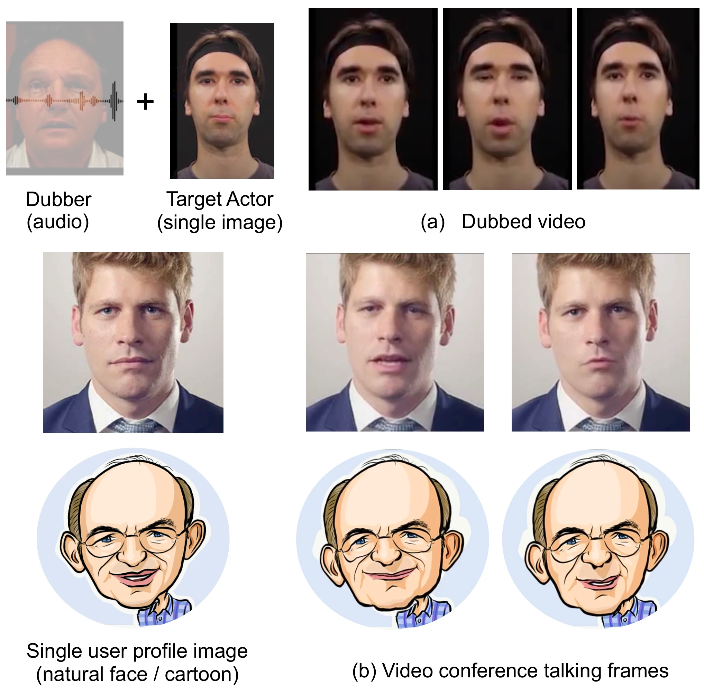
5.6 训练与推理并不对称：四处关键差异
论文把 \(\mathbf{y}_t = \mathbf{q} + \Delta\mathbf{q}_t + \Delta\mathbf{p}_t\) 写成一个统一的等式，但代码里"训练时的 \(\mathbf{q}\)"和"推理时的 \(\mathbf{q}\)"来路完全不同。这四处不对称是复现失败最常见的来源，也是第 2、3 步那些"手工微调"存在的真正原因。
| 环节 | 训练时 | 推理时（发布的 main_end2end.py 路径） |
|---|---|---|
| 静态脸 \(\mathbf{q}\) 从哪来 | 从同一段训练视频里每隔 10 个窗口取一帧，再用 __close_face_lip__ 挑内唇多边形面积最小的那一帧——即该说话人自己的"最闭嘴"自然帧 | 用户给的那一张照片检测出的 landmark，经 norm_input_face 做 scale/shift 归一化。没有"挑最闭嘴帧"这一步——只有一帧可挑 |
| 是否 ICP 配准 | --use_reg_as_std 默认 True：\(\mathbf{q}\) 会 ICP 配准到 STD_FACE_LANDMARKS.txt 的 9 个锚点 | 不做 ICP。anchor_t_shape 与 t_shape_idx 被加载了，但只在未启用的 no_y_rotation 分支里用到。补偿手段是第 3 步 close_input_face_mouth(p1=0.7, p2=0.5)，手工把张嘴的照片捏成闭嘴 |
| speaker embedding 噪声 | add_z_spk=True：spk_encode += randn × 0.01 | add_z_spk=False，不加噪声；拼接进 Transformer 输入的 128 维 \(\mathbf{z}\) 恒为零 |
| speaker 分支的监督目标 | l1_loss(fl_dis_pred + face_id, reg_fls_gt)，其中 reg_fls_gt 是预处理阶段逐帧 ICP 配准后的 landmark；头姿由独立的 pos_pred（四元数 + 平移，或 3×4 仿射）单独预测、单独监督 | 没有监督信号，直接 fl_dis_pred + input_face_id 得 \(\mathbf{y}_t\)，再反归一化（xy 取负、除 scale、减 shift）回原图尺度 |
第四行与论文正文直接冲突。Speaker-Aware Animation Training 的 Dataset 段落原话是："In contrast to the content animation step, we do not register the landmarks to a front-facing template since here we are interested in learning the overall head motion." #Zhou et al., 2020 但代码里预处理脚本 Av2Flau_Convertor.py 对每一帧都做 ICP 配准（对齐 ANCHOR_T_SHAPE_9.txt），结果存进 gaze pickle 的 anchor_t_shape 字段，再由 my_collate_in_segments 变成 regist_fls 送进损失。代码的真实设计其实比论文描述的更彻底：把头姿从 landmark 监督里完全剥出去，改由一个独立的 pos_pred 头预测刚体变换，推理时再用 R.from_quat(quat).as_matrix().T 把头姿乘回来。"配准即解耦"这条路，代码走到了论文没写的那一步。
另外三处不对称也各有后果。第二处意味着推理时的 \(\mathbf{q}\) 不在训练的 \(\mathbf{q}\) 分布里——训练见的是"该说话人自己最放松的闭嘴帧（还配准过）"，推理见的是"任意一张照片（只做了尺度归一化）"。第 2 步的 slimmer lips / wider eyes 手工偏移和第 3 步的强制闭嘴，本质上都是在把用户的照片往训练分布上推。第三处的噪声只在训练时加，是一个针对 speaker embedding 的正则化，推理关掉是正确的。
5.7 流式视角：前瞻、因果性与 batch-as-sequence
如果把 MakeItTalk 当作一个候选的实时数字人后端来评估，有三件事必须先看清楚，而论文一件都没提。
第一，它是非因果的，前瞻量不小。content 分支的数据集切成 num_window_frames=18, num_window_step=1，第 \(i\) 个窗口取 au[i:i+18] 而监督 fl[i]，模型内部 output = output[:, -1, :] 取 LSTM 末帧隐状态。也就是说：要产出第 \(i\) 帧的口型，必须先拿到第 \(i+17\) 帧的音频——前瞻 17 帧 ≈ 0.27 s @ 62.5 fps。speaker 分支的同名 LSTM 窗口也是 18 帧，但它后面还接了注意力，前瞻量要大得多（见第三条）。
第二，注意力没有任何因果掩码。nopeak_mask 与 create_masks 在 model_audio2landmark.py 和 model_audio2landmark_speaker_aware.py 里都完整定义了，但 Encoder.forward(self, x, mask=None) 的调用点从来不传 mask——编码器实际跑的是双向全注意力。这两个函数是死代码。这意味着即使你愿意接受 0.27 s 前瞻，也没法靠"打开一个开关"把它变成因果模型。
第三，长程上下文是用"batch 当 sequence"实现的。这是全套代码里最容易被误读的一处。Audio2landmark_pos.forward 里：
而 PositionalEncoder.forward 取位置编码用的是 seq_len = x.size(1)——也就是 \(B\)。于是 batch 轴被当成了序列轴：\(B\) 个"窗口"变成一条长度 \(B\) 的序列，自注意力在这 \(B\) 个位置上算全对权重。\(B\) 由段批 seg_bs=512 决定（train_audio2landmark.py 里硬编码），而这 512 个窗口是 my_collate_in_segments 按 step 1 连续切出来的，所以注意力实际覆盖了 512 个连续输出帧 ≈ 8.2 s——正好撞满 PositionalEncoder(max_seq_len=512) 的位置编码上限。这也解释了为什么论文说的 \(\tau' = 256\) 帧窗口在代码里根本找不到：长程上下文不是靠"切更长的窗"实现的，而是靠"把一整段窗口堆成一条序列"。
这个设计带来三笔流式化必须还的债
for j in range(0, inputs_fl.shape[0], seg_bs)，相邻 chunk 不重叠，也没有 KV cache、没有跨 chunk 保留的 recurrent state。每 512 帧（约 8.2 s）注意力上下文清零一次。更糟的是紧跟着一句 if(inputs_fl_segments.shape[0] < 10): continue——尾部不足 10 个窗口的残段会被整段静默丢弃。
好消息是这三笔债的还法都不需要重新设计模型：把 content LSTM 的 hidden state 跨帧保留下来、并把监督目标从"窗口首帧"改成"窗口末帧"（它本来就是单向 LSTM，天然是因果的）；给 Transformer 接上已经写好的 nopeak_mask，并把"段内绝对位置编码"换成可滚动的相对位置；再补一个 KV cache 消掉 18× 冗余。三处改动都是工程量而非研究量——但都需要重新训练，因为位置编码的语义变了。
6.1 实验配置表
| 配置项 | 披露状态 | 具体值 |
|---|---|---|
| 评测数据集 | ✅ 已披露 | VoxCeleb2 子集 test split：268 段 / 67 speakers，每段 5–30 秒；说话人身份训练时见过、测试语音视频不同；landmark 用 Bulat 检测器提取并人工核验。跨域泛化部分为定性展示（油画/素描/漫画/名人照片） |
| 评测指标 | ✅ 已披露 | 唇部：D-LL（下颌+嘴唇 landmark 平均欧氏距离，按每段视频参考嘴唇最大宽度归一化）、D-VL（landmark 速度差，相邻帧差分）、D-A（张嘴面积差，按参考嘴部最大面积百分比）；整体：D-L（全部 landmark 距离）、D-V（全部 landmark 速度差）、D-Rot / D-Pos（头旋转角差 / 头位置差）。另有 MTurk 用户研究与 t-SNE 定性分析 |
| Baseline 方法 | ✅ 已披露 | 唇部：VisemeNet #Zhou et al., 2018、Eskimez #Eskimez et al., 2018、Chen/ATVGnet #Chen et al., 2019；头姿：retrieve-same ID / retrieve-random ID——论文的理由是"现有语音驱动方法根本不合成头动，常见做法是从另一段视频拷贝头姿"，具体实现是检索头姿与位置序列后把 landmark 平移并旋转去复现该头姿；same ID 取同说话人的训练视频（论文明说这让该 baseline 更强），random ID 取随机说话人；用户研究：Vougioukas #Vougioukas et al., 2019、Chen #Chen et al., 2019。（笔者注：这套检索式头动的思路与 Obama #Suwajanakorn et al., 2017 一脉相承，但论文在 baseline 段落里并未点名。） |
| 推理硬件 | ⚠️ 未披露 | 论文只给 FPS（真人 ~22、卡通 ~28），未指明 GPU 型号；训练侧为 1080Ti |
| 推理分辨率 | ✅ 已披露 | i2i 网络输入 6 通道 256×256、输出 3 通道 256×256；卡通分支为原图分辨率的三角 warp |
| 推理环境 | 部分披露 | Python 3.6 conda + ffmpeg；Ubuntu 另需 winehq-stable（官方测试 Ubuntu 16.04 + wine 5.0.3）跑闭源 facewarp.exe；新木偶绑定需独立 Python 2 环境跑 Face-of-Art |
还有一件事容易被当成"配套设施"忽略掉：这套指标本身就是论文列出的第四条贡献——"We propose a set of quantitative metrics and conduct user studies for evaluation of talking-head animation methods." #Zhou et al., 2020 在 2020 年，说话头动画领域并没有公认的定量协议：唇同步方法各测各的，头动方法基本只做定性展示。D-LL / D-VL / D-A / D-L / D-V / D-Rot / D-Pos 这七项加两项用户研究，是第一次有人把"口型准不准"和"头动像不像这个人"拆成可分别度量、可分别归因的两组数。后来的跨域工作（VectorTalker、AniTalker）沿用 landmark 误差做 baseline 对比时，用的正是这一套。
指标覆盖度的诚实评估
本文的评测体系完全建立在 landmark 几何误差上，外加用户研究。它没有 FID / FVD / LPIPS 这类画质与分布距离指标，没有 LSE-C / LSE-D / SyncNet 这类音画同步指标，也没有 CSIM / ArcFace 这类身份保持指标——2020 年这些还没成为标准配置。这意味着：D-LL / D-VL / D-A 能很好地覆盖口型准确度与动作自然度，D-Rot / D-Pos 覆盖头姿合理性，MTurk 覆盖主观真实感与风格辨识度；但像素级画质、长时稳定性、身份一致性、音画同步的客观度量全部缺失。真人分支那些背景扭曲、256×256 低分辨率的问题，恰恰是这套指标看不见的——用户研究里明确指示参与者"忽略机位/变焦只看脸"，等于主动把这些缺陷排除在评价之外。
6.2 唇部 landmark 定量对比（Table 2）
公平性处理：所有方法统一在同一"中性"头姿下只比 landmark，剥离头动因素 #Zhou et al., 2020。
后面的 Table 2 与 Table 3 都含三个消融变体，先把它们的构造方式讲清楚——论文在评测节里给了逐条定义，关键在于"保留 VC 模块做解耦"与"单独训练并单独测试某个分支"这两件事是分开控制的：
| 变体 | voice conversion 解耦模块 | 实际训练/测试的分支 | 检验什么 |
|---|---|---|---|
Ours (no separation) | 去掉——原始音频特征直接作为输入 | 只训测 speaker-aware 动画分支 | 不做内容与身份解耦会怎样（audio content 与 speaker identity 仍然纠缠） |
Ours (no speaker branch) | 保留 | 只训测 speech content 分支 | speaker-aware 分支对头动的贡献 |
Ours (no content branch) | 保留 | 只训测 speaker-aware 分支 | speech content 分支对唇同步的贡献 |
Ours (full) | 保留 | 两分支都训测 | 完整系统 |
两者都只训测 speaker-aware 分支，区别只在有没有前置的 VC 解耦：no content branch 喂的是解耦后的干净 content embedding，no separation 喂的是原始音频特征（里面身份和内容混在一起）。所以这两行的差值就是解耦本身的净收益——D-A 从 10.2% 掉到 17.1%（Table 2），是全文对 AutoVC 模块价值最干净的度量。
| 方法 | D-LL ↓ | D-VL ↓ | D-A ↓ |
|---|---|---|---|
| VisemeNet #Zhou et al., 2018 | 6.2% | 0.63% | 15.2% |
| Eskimez #Eskimez et al., 2018 | 4.0% | 0.42% | 7.5% |
| Chen (ATVGnet) #Chen et al., 2019 | 5.0% | 0.41% | 5.0% |
| Ours (no separation) | 2.9% | 0.64% | 17.1% |
| Ours (no speaker branch) | 2.2% | 0.29% | 5.9% |
| Ours (no content branch) | 3.1% | 0.38% | 10.2% |
| Ours (full) | 2.0% | 0.27% | 4.2% |
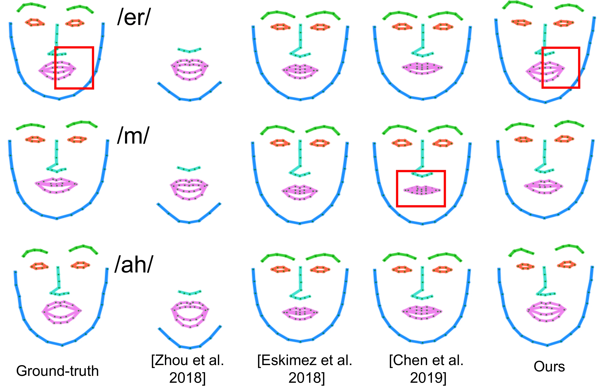
6.3 头姿预测对比（Table 3）
这一组 baseline 的设计出发点很实在：现有的音频驱动面部动画方法根本不合成头动，常见策略是从另一段已有视频里把头姿拷过来。于是论文照这个策略造了两个 baseline——先从训练集里随机挑一段视频取出头姿与头位置序列，再把面部 landmark 平移 + 旋转去复现拷贝来的头姿与位置 #Zhou et al., 2020：
- retrieve-same ID：拷贝来源是与测试视频同一说话人的另一段训练视频。论文明说这个选择让 baseline 更强，因为它复用的是同一个人自己的动态。
- retrieve-random ID：拷贝来源是随机另一个人的视频。它的用途是检验"我们的方法（以及替代品）产出的头姿与表情是否只是比随机好一点"。
（笔者注：这条"从别处拷贝头姿"的路线，最有名的实现就是 Obama #Suwajanakorn et al., 2017 那套检索式方案；论文在 baseline 段落里并未点名。）
| 方法 | D-L ↓ | D-V ↓ | D-Rot / D-Pos ↓ |
|---|---|---|---|
| retrieve-same ID | 17.1% | 1.2% | 10.3 / 8.1% |
| retrieve-random ID | 20.8% | 1.1% | 21.4 / 9.2% |
| Ours (no separation) | 12.4% | 1.1% | 8.8 / 5.4% |
| Ours (random ID) | 33.0% | 2.4% | 28.7 / 12.3% |
| Ours (no speaker branch) | 13.8% | 1.2% | 12.6 / 6.9% |
| Ours (no content branch) | 12.5% | 0.9% | 8.6 / 5.7% |
| Ours (full) | 12.3% | 0.8% | 8.0 / 5.4% |
三个必须读出来的信号：
- 生成优于检索，即使检索的是同一个人。full model 的 D-Rot 比 retrieve-same ID 低 1.3×（8.0 vs 10.3），D-Pos 低 1.5×（5.4 vs 8.1）；比 retrieve-random ID 分别低 2.7× 与 1.7×。含义是：把同一说话人另一段视频的头姿照搬过来，也与当前音频不同步——头动必须被生成，不能被检索。
- 去掉 speaker 分支，头姿指标恶化 1.6×（D-Rot 8.0 → 12.6），但唇同步几乎不掉（D-LL 2.2% vs 2.0%）。反过来去掉 content 分支，头动几乎不掉（8.6 vs 8.0），但 D-LL 涨 1.6×、D-A 涨 2.4×。这是两分支分工干净的最强证据：单一网络无法同时学好唇同步与 speaker-aware 头动。
- 注入随机 speaker ID，D-Rot 恶化 3.6×（8.0 → 28.7）。这个消融的方向与前两个相反——它不是"去掉某模块"，而是"给对模块喂错输入"。恶化如此剧烈，说明模型确实在按 embedding 条件生成对应说话人的动态，而不是输出某种通用动态再贴上标签。
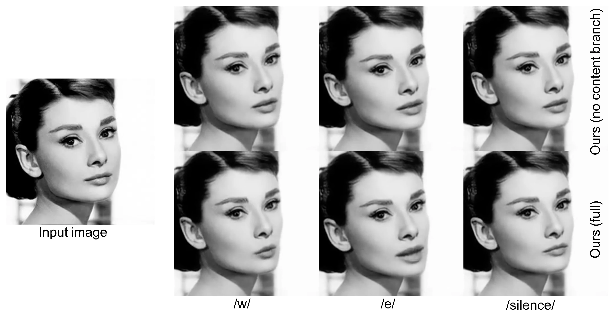
6.4 t-SNE：风格统计空间里的落点
定量指标之外，论文设计了一个巧妙的定性验证 #Zhou et al., 2020。做法是：从数据集里用 furthest sampling 挑出 8 名代表性说话人（他们的 AU / 头姿 / 头位置统计量与其余人差异最大，覆盖从极静到极动的风格谱系两端）；对每人计算 Action Units 方差 + 头姿方差 + 头位置方差（AU 按 FACS 的定义 #Ekman et al., 1978 从 landmark 计算得出），预测 landmark 与参考 landmark 各算一套；再用 t-SNE 降维 #van der Maaten et al., 2008。
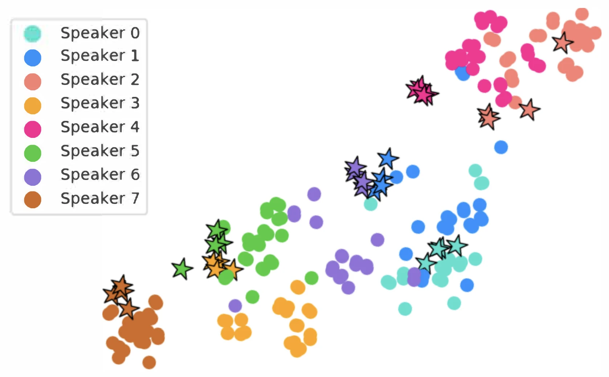
这个实验的价值在于它检验的是分布层面的相似度而非逐帧误差：即使每一帧的位置都对，如果整体动态的"活跃度分布"不对，星号也会飘离实心点。它与 random-ID 消融（3.6×）互为表里，共同支撑 speaker-aware 这个卖点。
6.5 用户研究：324 人、6480 份响应
两项 MTurk 研究，总量 324 名参与者、6480 条响应 #Zhou et al., 2020。方法论上做得相当严谨，值得抄：
| 研究 1：speaker awareness（卡通） | 研究 2：真人视频真实感 | |
|---|---|---|
| query 池 | 300 个 | 780 个 |
| 呈现方式 | 上 = 真人参考视频；下 = 两个卡通动画（full vs "random ID" / "no speaker ID" 变体，左右随机） | 上 = 真人单帧；下 = 两个生成视频（ours vs Vougioukas 或 Chen，左右随机） |
| 问题原文 | "Which of the two cartoon animations best represents the person's talking style in terms of facial expressions and head motion?" | 谁的表情 + 头动更 realistic & plausible；明确指示忽略机位/变焦只看脸 |
| 选项 | 4 个（左 / 右 / both / none） | 同 |
| 一致性检测 | 每份问卷 20 queries = 10 个唯一 query × 2 次重复（视频左右翻转）；10 个唯一 query 中 >5 个前后矛盾、或用时 <1 分钟者剔除；每人限 1 份问卷 | |
| 有效样本 | 300 queries × 每 query 3 票 × 2 重复 = 1800 响应（由筛出的 90 名可靠参与者提供） | 780 queries × 每 query 3 票 × 2 重复 = 4680 响应（由 234 名参与者提供） |
| 结论 | full 方法对两个变体均获多数票 | ours 被大多数票选为更真实 |
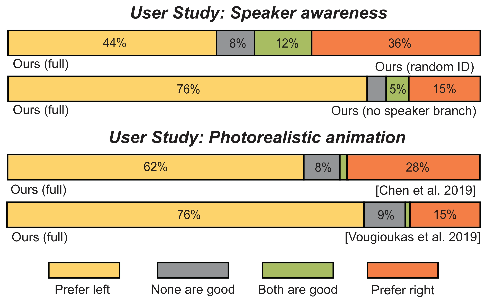
"左右翻转重复提问 + 剔除自相矛盾者"这个设计把 MTurk 数据质量从"随便点点"拉到了可用水平。需要提醒的是：论文只披露了筛选后的可靠参与人数（研究 1 为 90 人），没有给出初始参与人数，所以通过率无从计算——表里的 300 是 query 池大小，不是人数。
6.6 定性结果与失败案例
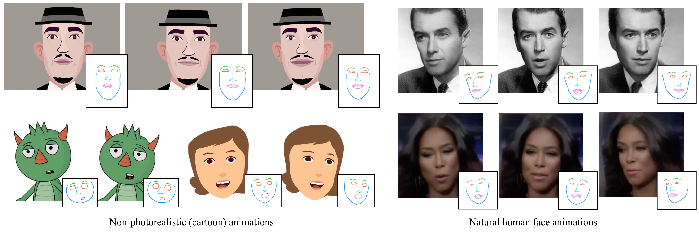
论文 Limitations and Future Work 一节写了八条，每条都能追溯到架构里的某个具体取舍：
| # | 局限 | 根因 | 作者建议 |
|---|---|---|---|
| 1 | /b/ /m/ /p/ /f/ /v/ 双唇音与擦音口型捕捉不佳 | voice conversion 在谱重建时丢失短音素表征 | 做面向动画的域适配 VC |
| 2 | i2i 网络只吃 2D landmark，咬字质量受限 | landmark 是稀疏几何代理，不含音素/视素语义 | 把 phoneme / viseme 相关特征一并作为输入 |
| 3 | 背景扭曲，产生"相机运动混入头动"的观感 | i2i 网络对前景头和背景一起 warp | 引入前景/背景分离或 portrait matting |
| 4 | 低层伪影（low-level artifacts） | 未建模像素之间的长程时空依赖 | 捕捉 long-range temporal and spatial dependencies between pixels |
| 5 | 大头动 → 更多伪影 | 单图输入下大旋转/平移需要对脖颈、肩、头发等未见区域外推，网络难以 hallucinate | — |
| 6 | 稀疏 landmark 表示的天花板：大运动时真人脸部形变 | landmark 是头部的粗糙代理 | 更密的 landmark 或 morphable model 参数，但指出 zero-shot 训练 morphable model 是开放难题（现有方法需在目标脸上额外 fine-tune） |
| 7 | 说话人情绪未建模 | 只捕捉 speaker 风格（如活跃度），mood / sentiment 未纳入 | 接入 sentiment analysis |
| 8 | 无 human-in-the-loop | 全自动流水线 | 动画师编辑某些帧 landmark 并传播到全片 |
另外还有四条不在 Limitations、而是在方法节里以负结果形式记录的：vanilla RNN 不如 LSTM；speaker embedding 直接用 256 维泛化差，降到 128 更好（尤其对训练时没见过的说话人）；content/speaker 两分支共用一个 LSTM 不如各自独立参数；i2i 曾试过 Zakharov 的 embedder + AdaIN 方案，最终弃用改为 UNet 6 通道拼接 #Zhou et al., 2020。这四条"试过但没用"的记录，比正面结果更能说明架构选择的搜索过程。
7.1 Limitations 几乎逐条预言了后续四年
把 2020 年的这份局限清单和 2021–2024 的实际路线并排看，会有一种奇怪的感觉——它像一份提前写好的路线图：
| MakeItTalk 的局限 / future work | 后来谁兑现了 |
|---|---|
| "更密的 landmark 或 morphable model 参数可能更准，但 zero-shot 训练是开放难题（现有方法需在目标脸上额外 fine-tune）" | SadTalker（CVPR 2023）改用音频→3DMM 系数（表情 + 头姿），单图驱动且不需要在目标脸上 fine-tune，成为开源社区事实标准之一 #Zhang et al., 2023 |
| 栅格三角化输出不可编辑、分辨率相关 | VectorTalker（CVPR 2024）把 landmark 驱动的栅格 warp 升级为 SVG 渐进矢量化，正文明确写 "MakeItTalk uses the facial landmark as the intermediate representation and maps pixels across frames via triangulation" 并在 Fig. 5 直接对比 #Hu et al., 2024 |
| landmark 位移是手工设计的运动表征 | AniTalker（ACM MM 2024）把 landmark 位移升级为学习到的 identity-decoupled facial motion token，用扩散/自回归生成，实验把 MakeItTalk 列为 SOTA 语音驱动 baseline #Liu et al., 2024 |
| VC 模块在谱重建时丢失 /b/ /m/ /p/ /f/ /v/ 这类短音素表征 → 建议做面向动画的域适配 VC | 后续主流路线干脆不再经由 voice conversion 取 content，而是把自监督语音表征（wav2vec 2.0 / HuBERT 一类）直接作为音频编码器输入，从源头上绕开了谱重建这一步（笔者注：这是对领域走向的归纳，非论文预言） |
| i2i 对前景头和背景一起 warp，造成"相机运动混入头动" → 建议引入前景/背景分离或 portrait matting | Wav2Lip（ACM MM 2020，同年）走的是更彻底的工程绕法：只重绘嘴部区域、其余像素原样保留，背景根本不动 #Prajwal et al., 2020 |
| 真人分支需要像素生成、背景会扭曲 | PC-AVS（CVPR 2021）回到像素端到端，隐式解耦音频/姿态，可控头姿 |
需要精确一点的地方：ToonTalker（ICCV 2023）也用学习型形变场替代了 MakeItTalk 那套纯几何 Delaunay warp，看上去像是直接承接——但它属于 X2-Face 一脉的像素域跨域重演路线（视频驱动而非音频驱动），经全文核查并不引用 MakeItTalk。真正在引用链上直接承接的是 VectorTalker 与 AniTalker。这个区分有意义：它说明"跨域 talking head"其实有两个独立源头，landmark 中间表征（MakeItTalk）与像素域自监督重演（X2-Face / ToonTalker），两条线各自抵达了相似的技术答案，却不是彼此的学生。
7.2 论文与代码的十二处出入（复现必读）
| 项 | 论文 | 代码 |
|---|---|---|
| content 分支的音频输入 | "从 AutoVC 提取 content embedding" | 把音频 voice-convert 到硬编码的 Obama 音色后取重建 mel（obama_emb.txt） |
| \(L_c\) / \(L_s\) 的距离 | \(\|\cdot\|_2^2\) | l1_loss |
| speaker 分支对抗训练 | LSGAN，\(\mu_s = 0.001\) | 判别器 \(D_T\) / \(D_L\) 整段注释掉，实际只剩 L1 + Laplacian + pos L1 |
| speaker embedding 降维 | "single-layer MLP" 256→128 | 3 层 MLP 256→256→128→spk_emb_enc_size |
| Transformer \(d_{model}\) | 32 | 实际 64（= 32 × 2 heads，每头 32） |
| Transformer FFN | "与输入同维" | d_ff = 2048 固定 |
| 注意力窗 | \(\tau' = 256\) 帧（4s） | 两个分支的数据集都切成 num_window_frames=18, num_window_step=1；长程上下文靠段批 seg_bs=512（train_audio2landmark.py 里硬编码，main_end2end.py 的 --segment_batch_size 默认 1 且没被这条路径使用）——512 个连续 step-1 窗口经 unsqueeze(0) 变成长度 512 的"伪序列"喂进编码器，正好撞满 PositionalEncoder(max_seq_len=512) |
| speaker 训练数据 | 67 speakers | 脚本默认 use_11spk_only=True（11 人白名单） |
| speaker 分支学习率 | \(10^{-4}\) | 脚本默认 1e-3；adjust_learning_rate 里的 0.3^(epoch//50) 衰减只定义、从未被调用，是死代码，实际全程恒定 1e-3 |
| i2i 损失 | L1 + \(\lambda_a\)·VGG 感知 | 另加 Gram style loss × \(3\times10^7\) |
| Laplacian 权重 \(\lambda\) | \(\lambda_c = \lambda_s = 1\) 可调 | content 分支只当 >0 开关用（loss += loss_laplacian，改数值不生效）；speaker 分支则真的乘了权重（loss_laplacian * lambda_laplacian_smooth_loss）——两个分支处理方式不一致 |
| content 分支 LSTM 的输入维度 | 只写 \(\mathbf{A}\in\mathbb{R}^{T\times D}\)，\(D\) 从未给出 | use_prior_net=True 时先过 fc_prior（80 → 256 → 161，两层 Linear + BatchNorm + LeakyReLU），LSTM 实际吃的是 161 维（AUDIO_FEAT_SIZE = 161 硬编码）；speaker 分支的 audio_projection 则因 audio_dim c_enc_hidden_size 256 被判为不需要，整块是死代码 |
还有一条伦理层面的落差值得记录：论文声称 "Our code includes a watermark to the generated videos making it clear that they are synthetic"，但全仓库 grep（*.py + *.ipynb）找不到任何水印实现——要么藏在闭源的 facewarp.exe 里无法验证，要么根本没随代码发布。论文单列了 Ethical Considerations 章节，主动开源以 "demystify this technology"（发表正文原话；被注释掉的 arXiv 扩展版里写的是 "demystify deepfake videos"），扩展版还讨论了扩充 deepfake 检测数据集与 Content Credentials 式的编辑历史追踪；Adobe 后来确实把 Content Credentials / CAI 发展成了内容真实性主线。这份立场在 2020 年的学术发表中是相当早的。
7.3 可操作的启发
启发一：当输出空间的选择比模型容量的选择更重要时，先换空间。MakeItTalk 的 landmark 分支只有 5.7M 参数、单卡 12–30 小时训完。Table 2 里的三个 baseline（VisemeNet / Eskimez / Chen-ATVGnet）论文都归为"合成面部 landmark、但无法产生头动"的同一类方法 #Zhou et al., 2020，MakeItTalk 在这条同赛道上把 D-LL 压低 2×（对 Eskimez）到 3.1×（对 VisemeNet）；而真正的差异化不在误差数字，在于它还额外生成了头动——这是三个 baseline 结构上就做不到的事。不是网络设计得多巧，而是它压根没在百万维像素空间里跟人对拼。如果你的任务允许一个低维、可解释、跨域共享的中间表示，先找它。
启发二："相对量 + 配准"是把域差异挪出学习问题的通用手法。\(\mathbf{y}_t = \mathbf{q} + \Delta_t\) 这个分解之所以能跨到油画和漫画，靠的是两件事同时成立：网络只学 \(\Delta_t\)（身份无关），且 \(\Delta_t\) 被表达在一个所有域共享的规范化坐标系里（ICP 到标准脸、scale 归一到下颌宽 1.6）。少了配准，相对位移的尺度在不同域之间就没有可比性。任何想做跨风格迁移的系统都值得检查这两条。
启发三：把 one-to-many 拆成"共享项 + 条件残差项"，比硬训一个大网络有效。content 分支负责 speaker-agnostic 的部分，speaker 分支只输出残差调制，两者相加。消融给出的证据非常干净：去掉任一支，另一支负责的指标几乎不受影响（唇同步 2.2% vs 2.0%；头姿 8.6 vs 8.0），说明分工真的解耦了。这比"不做解耦、让单个分支直接从原始音频特征里学"要可靠得多——后者正是 no-separation 变体（去掉 VC 模块，原始音频特征直接进 speaker-aware 分支并单独训测）D-A 恶化 4.1× 的下场。
启发四：时序一致性可以外包。真人 UNet 没有任何时序模块，靠"landmark 平滑 → 图像自然连贯"这条假设 + savgol 滤波兜住了。这在 2020 年是合理的取舍（省掉一整个时序建模的复杂度）；今天有了更便宜的时序注意力，这个取舍需要重新评估，但"把时序责任前移到中间表示"的思路依然有效。
启发五：论文里的方法 \(\neq\) 能跑的产品。14 步后处理链里的 5 步是在修网络缺陷（强制闭嘴、逐维 calibration、防翻唇、程序化眨眼、手工调整唇眼），而它们全都没写进 paper。复现任何说话头系统时，先假设"论文描述的是网络，仓库里藏着的后处理才是效果的一半"，然后去读推理脚本而不是方法节。
启发六：speaker 身份怎么条件化，决定了系统能不能 zero-shot。2020 年前后有三条路线在竞争，本文选的是中间那条：
| 路线 | 身份怎么进网络 | 见到新说话人时 | 代价 |
|---|---|---|---|
| 离散 ID（one-hot / 查表） | 训练集里每个人一个索引 | 完全无能为力——没有对应的槽位 | 最低，但身份数量被训练集锁死 |
| 连续 speaker embedding（本文） | 说话人验证模型（Resemblyzer / GE2E）抽 256 维，降维到 128 再送进网络 #Wan et al., 2018 | 直接可用——身份空间是连续的，新人落在已有流形附近 | 需要额外的说话人验证模型；条件信号偏弱（见下） |
| per-target fine-tuning | 不设身份输入，把身份烤进权重里 | 需要重新训练 | Neural Voice Puppetry 要"约 30 小时的目标专属参考视频"做额外训练 #Thies et al., 2020 |
论文对第二条路线的两个细节最值得注意。其一是降维是冲着泛化去的：作者明说把 embedding 从 256 降到 128 "improved the generalization of facial animations especially for speakers not observed during training" #Zhou et al., 2020——高维 embedding 会让网络记住训练集里每个人的具体坐标，降维等于强行把它压成一个更粗、更可外推的风格空间。其二是 random-ID 消融给出了 embedding 真在工作的证据：注入随机 speaker ID 后 D-Rot 恶化 3.6×（8.0 → 28.7），说明网络确实在按 embedding 生成对应说话人的动态，而不是把它当标签贴在一份通用动态上——这正是离散查表设计不可能通过这个测试的原因。
但也要看到这条路线的软肋：代码里 speaker embedding 在训练和推理时都被乘了 3.0（--emb_coef）才送进网络，训练时还额外加了 randn × 0.01 的噪声。一个条件信号需要被放大三倍才够用，通常意味着它在原始尺度下对输出的影响力太弱。这与 speaker 分支只输出残差调制、且对抗判别器在开源代码里被整段注释掉的状况是一致的。
最后一个观察：speaker-aware 这个卖点后来几乎没被继承。SadTalker、VectorTalker、AniTalker 这些直接后继都保留了"单图零样本驱动"，却都没把"复现这个人特有的头动风格"当作目标——它们的头姿要么来自 3DMM 系数、要么来自可显式控制的 pose 输入。原因不难理解：对单图驱动系统来说，长相已经由参考图给定了，speaker embedding 唯一还能贡献的只有头动风格，而头动风格恰恰是产品化场景里最不刚需、最难评估的一环（本文也只能靠 t-SNE 和 MTurk 来论证它）。这是一个"技术上成立、需求上边缘"的典型案例。
7.4 对动漫/吉祥物数字人的现实评估
MakeItTalk 的卡通路线（音频 → 68 landmark → Delaunay warp）至今仍是"直接驱动动漫脸"的经典答案，仓库自带 19 个已绑定木偶模板，绑定一次即可全自动推理，论文报的离线吞吐约 28 FPS（未指明 GPU 型号）。但对极简风格的角色——比如只有眼睛、眉毛和一道笔画嘴的吉祥物——这条路线有三个具体的坎：
- 68 点拓扑过参数化。Face-of-Art 是在 Artistic-Faces 数据集（油画、素描、漫画、立体派等类人艺术脸）上训练的 #Yaniv et al., 2019；对没有鼻子、嘴只是一条线的极简角色，它大概率检测不出完整的 68 点拓扑。人工精修工具能拖拽修正，但修正一个"根本不存在的鼻梁"没有意义。
- Delaunay warp 在缺部件的脸上会退化。三角剖分假设 68 点分布合理；若鼻梁 27-35、内唇 60-67 全部塌缩到同一位置，会产生大量退化三角形（面积趋零），warp 结果不可预测。
--inner_lip模式（只用 56 点）是官方给的缓解，但仍要求有完整的下颌 + 眉毛 + 眼睛 + 内唇。 - speaker-aware 头动对吉祥物可能是负资产。这套系统卖点是"还原说话人特有的头动风格"，但吉祥物通常需要固定、可控、循环的动作库，而不是从音频里推断出一个随机风格的头动。
amp_pos调到 0 就能得到静态头姿（Colab 注释明说 "put it to 0. for a static head pose"），但那样 speaker 分支的主要贡献就被关掉了。
7.5 一句话历史定位
MakeItTalk 是"landmark 中间表示 + 语音 content/speaker 解耦"路线的集大成者：它证明了说话头动画不必在像素空间死磕，从而第一次让语音驱动扩展到绘画、漫画、卡通等非真人域。同年的 Wav2Lip 拿下像素级唇同步 #Prajwal et al., 2020，PC-AVS 与 SadTalker 随后接管真人高保真 #Zhang et al., 2023，而 VectorTalker、AniTalker 这些跨域工作至今仍以它为 baseline 或思想起点 #Hu et al., 2024 #Liu et al., 2024。它站在 GAN/landmark 时代的顶点、diffusion 时代的前夜——这个位置让它既是一个时代的总结，也是下一个时代的参照系。
速查
- 核心等式：\(\mathbf{y}_t = \mathbf{q} + \Delta\mathbf{q}_t + \Delta\mathbf{p}_t\)（静态 landmark + content 位移 + speaker 位移）。
- 两个窗口：content 分支 \(\tau = 18\) 帧（0.3s，音素尺度）；speaker 分支 \(\tau' = 256\) 帧（4s，头动尺度）。
- 三块参数：content LSTM 1.9M / speaker Transformer 3.8M / i2i ResUNet 30.7M。
- 四个损失：\(L_c\)（位置 + Laplacian，\(\lambda_c=1\)）、\(L_{gan}\)（LSGAN）、\(L_s\)（位置 + Laplacian + GAN，\(\mu_s=0.001\)）、\(L_a\)（L1 + VGG19 感知，\(\lambda_a=1\)）。
- 三组数据：VCTK 109 人（VC）/ Obama 6h（content，配准到 front-facing 模板）/ VoxCeleb2 67 人 1232 clips（speaker，60/20/20 划分；论文说不配准，代码实际逐帧 ICP 配准，见 §5.6）。
- 成本：约 202 GPU·小时（1080Ti；12h×1 + 30h×1 + 20h×8，笔者按 training.tex 折算），目标图像零训练；推理真人 22 FPS、卡通 28 FPS。
- 最狠的消融：去掉 VC 解耦，D-A 恶化 4.1×；注入随机 speaker ID，D-Rot 恶化 3.6×。
- 跨域的秘密：相对位移（identity-free）+ ICP 配准到标准脸（跨域共享尺度）+ 解耦窄化学习目标。
参考来源
- Zhou, Y., Han, X., Shechtman, E., Echevarria, J., Kalogerakis, E., Li, D. (2020). MakeItTalk: Speaker-Aware Talking-Head Animation. ACM Transactions on Graphics 39(6), Article 221（SIGGRAPH Asia 2020）. DOI 10.1145/3414685.3417774 · arXiv:2004.12992 · 代码
- Zhou, Y., Xu, Z., Landreth, C., Kalogerakis, E., Maji, S., Singh, K. (2018). VisemeNet: Audio-Driven Animator-Centric Speech Animation. ACM TOG 37(4), SIGGRAPH 2018. ACM DL
- Eskimez, S. E., Maddox, R. K., Xu, C., Duan, Z. (2018). Generating Talking Face Landmarks from Speech. Proc. LVA/ICA 2018. arXiv:1803.09803
- Chen, L., Maddox, R. K., Duan, Z., Xu, C. (2019). Hierarchical Cross-Modal Talking Face Generation with Dynamic Pixel-Wise Loss（ATVGnet）. CVPR 2019. CVPR PDF · 代码
- Qian, K., Zhang, Y., Chang, S., Yang, X., Hasegawa-Johnson, M. (2019). AutoVC: Zero-Shot Voice Style Transfer with Only Autoencoder Loss. ICML 2019, pp. 5210–5219. arXiv:1905.05879
- Wan, L., Wang, Q., Papir, A., Lopez Moreno, I. (2018). Generalized End-to-End Loss for Speaker Verification（GE2E / Resemblyzer）. ICASSP 2018. arXiv:1710.10467 · 代码
- Yaniv, J., Newman, Y., Shamir, A. (2019). The Face of Art: Landmark Detection and Geometric Style in Portraits. ACM TOG 38(4), SIGGRAPH 2019. DOI 10.1145/3306346.3322984 · 代码
- Suwajanakorn, S., Seitz, S. M., Kemelmacher-Shlizerman, I. (2017). Synthesizing Obama: Learning Lip Sync from Audio. ACM TOG 36(4), SIGGRAPH 2017. 项目页
- Zakharov, E., Shysheya, A., Burkov, E., Lempitsky, V. (2019). Few-Shot Adversarial Learning of Realistic Neural Talking Head Models. ICCV 2019. arXiv:1905.08233
- Thies, J., Elgharib, M., Tewari, A., Theobalt, C., Nießner, M. (2020). Neural Voice Puppetry: Audio-driven Facial Reenactment. CVPR 2020. arXiv:1912.05566
- Zhou, H., Liu, Y., Liu, Z., Luo, P., Wang, X. (2019). Talking Face Generation by Adversarially Disentangled Audio-Visual Representation（ADIN）. AAAI 2019. arXiv:1807.07860 · 代码
- Vougioukas, K., Petridis, S., Pantic, M. (2019). Realistic Speech-Driven Facial Animation with GANs. International Journal of Computer Vision. arXiv:1908.06229
- Siarohin, A., Lathuilière, S., Tulyakov, S., Ricci, E., Sebe, N. (2019). First Order Motion Model for Image Animation. NeurIPS 2019. arXiv:2003.00196
- Prajwal, K. R., Mukhopadhyay, R., Namboodiri, V. P., Jawahar, C. V. (2020). A Lip Sync Expert Is All You Need for Speech to Lip Generation In the Wild（Wav2Lip）. ACM Multimedia 2020. arXiv:2008.10010 · 精读 →
- Zhang, W., Liang, X., Wang, L., et al. (2023). SadTalker: Learning Realistic 3D Motion Coefficients for Stylized Audio-Driven Single Image Talking Face Animation. CVPR 2023. arXiv:2211.12194 · 精读 →
- Hu, H., Wang, X., Sun, J., Fan, Y., Guo, Y., Jiang, C. (2024). VectorTalker: SVG Talking Face Generation with Progressive Vectorisation. CVPR 2024. arXiv:2312.11568
- Liu, T., Chen, F., Fan, S., Du, C., Chen, Q., Chen, X., Yu, K. (2024). AniTalker: Animate Vivid and Diverse Talking Faces through Identity-Decoupled Facial Motion Encoding. ACM Multimedia 2024. arXiv:2405.03121 · 代码
- Ronneberger, O., Fischer, P., Brox, T. (2015). U-Net: Convolutional Networks for Biomedical Image Segmentation. MICCAI 2015. arXiv:1505.04597
- Esser, P., Sutter, E., Ommer, B. (2018). A Variational U-Net for Conditional Appearance and Shape Generation. CVPR 2018. CVPR PDF
- Vaswani, A., Shazeer, N., Parmar, N., Uszkoreit, J., Jones, L., Gomez, A. N., Kaiser, Ł., Polosukhin, I. (2017). Attention Is All You Need. NeurIPS 2017. arXiv:1706.03762
- Devlin, J., Chang, M.-W., Lee, K., Toutanova, K. (2018). BERT: Pre-training of Deep Bidirectional Transformers for Language Understanding. arXiv preprint（后发表于 NAACL 2019）. arXiv:1810.04805
- Mao, X., Li, Q., Xie, H., Lau, R. Y. K., Wang, Z., Smolley, S. P. (2017). Least Squares Generative Adversarial Networks. ICCV 2017. arXiv:1611.04076
- Johnson, J., Alahi, A., Fei-Fei, L. (2016). Perceptual Losses for Real-Time Style Transfer and Super-Resolution. ECCV 2016. arXiv:1603.08155
- Simonyan, K., Zisserman, A. (2014). Very Deep Convolutional Networks for Large-Scale Image Recognition（VGG）. Proc. ICLR 2015. arXiv:1409.1556
- Sorkine, O. (2006). Differential Representations for Mesh Processing. Computer Graphics Forum 25(4). CGF
- Beeler, T., Bradley, D. (2014). Rigid Stabilization of Facial Expressions. ACM Transactions on Graphics 33(6), SIGGRAPH Asia 2014. ACM DL
- Segal, A., Haehnel, D., Thrun, S. (2009). Generalized-ICP. Robotics: Science and Systems (RSS) 2009. RSS
- Ekman, P., Friesen, W. V. (1978). Facial Action Coding System: A Technique for the Measurement of Facial Movement. Consulting Psychologists Press.
- McGurk, H., MacDonald, J. (1976). Hearing Lips and Seeing Voices. Nature 264, 746–748. DOI
- Han, X., Wu, Z., Huang, W., Scott, M. R., Davis, L. S. (2019). FiNet: Compatible and Diverse Fashion Image Inpainting. ICCV 2019. arXiv:1902.01823
- Averbuch-Elor, H., Cohen-Or, D., Kopf, J., Cohen, M. F. (2017). Bringing Portraits to Life. ACM Transactions on Graphics 36(6), SIGGRAPH Asia 2017. ACM DL
- Fišer, J., Jamriška, O., Simons, D., Shechtman, E., Lu, J., Asente, P., Lukáč, M., Sýkora, D. (2017). Example-Based Synthesis of Stylized Facial Animations. ACM Transactions on Graphics 36(4), SIGGRAPH 2017. ACM DL
- Bulat, A., Tzimiropoulos, G. (2017). How Far Are We from Solving the 2D and 3D Face Alignment Problem? (And a Dataset of 230,000 3D Facial Landmarks). ICCV 2017. arXiv:1703.00862
- van der Maaten, L., Hinton, G. (2008). Visualizing Data using t-SNE. Journal of Machine Learning Research 9, 2579–2605. JMLR